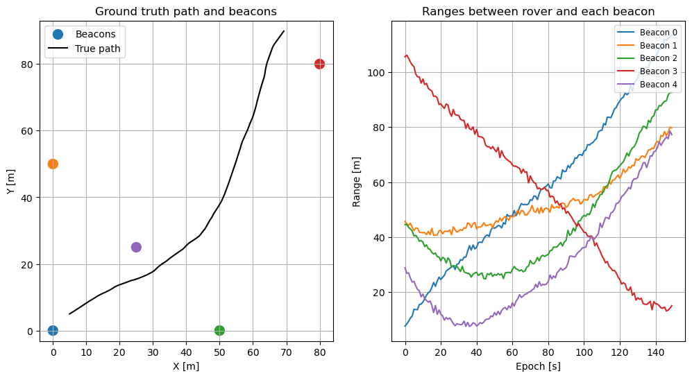

import matplotlib.pyplot as plt
import numpy as np
import pygnssThis demo serves as demonstration on how to use the particle filter module shipped within this repository. The notebook simulates a rover moving in 2D with constant-velocity dynamics and range measurements to fixed beacons. We will:
- Simulate a ground-truth trajectory and noisy range observations
- Build a simple constant-velocity Model compatible with
pygnss.filter - Run the particle filter and visualize position and velocity estimates
Particle filters — brief introduction
Particle filters (also known as Sequential Monte Carlo methods) are a family of simulation-based algorithms that approximate the posterior distribution of a system’s state by propagating and resampling a set of weighted samples (particles), enabling state estimation for strongly nonlinear or non‑Gaussian models.
Intuition
Think of a particle filter like a crowd of guesses about the state you want to estimate. In a positioning context, this state is usually the location where an object might be. Each guess (a particle) is a complete possible state (for example: x, y, vx, vy). As the system moves and we get measurements, we score each guess by how well it explains the measurements. We then keep the better guesses, copy them (more often if they are good), and add a bit of random jitter so the crowd explores nearby alternatives. Over time the crowd concentrates around the true state.
Why a Particle filter is helpful:
- Works when measurements or motion are complicated or noisy — the crowd can represent many possibilities.
- Can represent multiple plausible locations at once (not forced into a single average).
Key differences vs EKF/UKF
- Representation: EKF/UKF approximate the posterior with a single Gaussian (mean + covariance). Particle Filters (PF) approximate the full posterior with many weighted samples and can model any arbitrary posterior distribution (if the particle sampling is good enough)
- Linearity / Gaussian assumptions: EKF linearizes the dynamics/measurements, while PF can handle highly non-linear models.
- Computational cost: EKF/UKF are generally cheaper (\(O(n^3)\) for covariance operations with state dimension n) whereas particle filters scale roughly \(O(N_{particles} \cdot cost_{particle})\) and can become expensive as the number of particles or state dimension grows (though particle updates are easily parallelizable). This is the main drawback of PF against other filters such as e.g. EKF/UKF.
- Degeneracy & resampling: Particle filters can suffer sample impoverishment (most of the weight concentrates on a few particles), so strategies must be put in place to focus effort on high‑weight particles while maintaining diversity and preserving exploration.
When to use particle filters
- Nonlinear, non-Gaussian problems where the posterior is far from Gaussian (e.g., multi-modal)
- For low-to-moderate state dimensions.
Hands-on Particle Filter
In this notebook you will find a tutorial on the basics aspects of the PF applied to a simple navigation problem and how these aspects are represented in the pygnss.filter.particle module.
Prerequisites
To run this notebook, make sure you have the following packages included in your system
matplotlib
numpy
pygnssA Particle Filter (and in fact all estimation filters) require a Model that informs how to propagate the state in time and how to translate the state to the observations.
propage_state: given a state at epoch \(k\), generate the prior state for the next epoch \(k+1\). In a navigation context, it would consist in propagating the position based on the knowledge of the previous position and velocity.to_observations: given a state, generate the observations. This is used to compute the residuals relative to the actual observations, that will later lead to the innovation that will be applied to the estimated state.
A Model interface is provided in the pygnss.filter module. We are going to derive a constant-velocity 2D model with range observations to fixed beacons (i.e. ConstantVelocityRange2D)
from pygnss.filter import Model, ModelObs
class ConstantVelocityRange2D(Model):
def __init__(self, dt: float, beacons: np.ndarray):
self.dt = float(dt)
self.beacons = np.asarray(beacons, dtype=float)
self._Phi = np.array([[1, 0, dt, 0],
[0, 1, 0, dt],
[0, 0, 1, 0],
[0, 0, 0, 1]], dtype=float)
def propagate_state(self, state: np.ndarray) -> np.ndarray:
return self._Phi @ state
def to_observations(self, state: np.ndarray, compute_jacobian: bool = False, **kwargs) -> ModelObs:
"""
Compute range measurements to beacons from the current state.
"""
pos = state[:2]
rho = pos - self.beacons
ranges = np.sqrt(np.sum(rho**2, axis=1))
H = None
if compute_jacobian:
dr_dpos = rho / ranges[:, np.newaxis]
H = np.zeros((len(ranges), 4))
H[:, :2] = dr_dpos
return ModelObs(ranges, H)
def Phi(self):
return self._PhiThe Filter class also requires a class to handle the estimated state (i.e. print to a file, make plots, …)
from pygnss.filter import StateHandler
class HistoryHandler(StateHandler):
def __init__(self):
self.states = []
self.postfits = []
def process_state(self, state: np.ndarray, covariance_matrix: np.ndarray, **kwargs):
self.states.append(np.array(state, dtype=float).copy())
if 'postfits' in kwargs and kwargs['postfits'] is not None:
self.postfits.append(np.array(kwargs['postfits'], dtype=float).copy())Scenario
To demonstrate the application of the PF, we are going to simulate a 2D navigation case. The following code snippet simulates a trajectory as well as some noise ranges (i.e. distances between the rover and each of the beacons). The ranges will be the measurements to be ingested by the PF to estimate the position
# Simulate ground-truth motion and noisy range measurements
np.random.seed(42)
dt = 1.0
steps = 150
# Beacons in 2D space (meters)
beacons = np.array([[0, 0], [0, 50], [50, 0], [80, 80], [25, 25]], dtype=float)
# True initial state [x, y, vx, vy]
x0_true = np.array([5.0, 5.0, 0.8, 0.5])
# Process (acceleration) and measurement noise
sigma_a = 0.05 # m/s^2
sigma_r = 0.8 # m range noise
# Constant-velocity model matrices
F = np.array([[1, 0, dt, 0],
[0, 1, 0, dt],
[0, 0, 1, 0],
[0, 0, 0, 1]], dtype=float)
G = np.array([[0.5*dt**2, 0],
[0, 0.5*dt**2],
[dt, 0],
[0, dt]], dtype=float)
# Simulate trajectory
x_true = np.zeros((steps, 4))
x_true[0] = x0_true
for k in range(1, steps):
a = sigma_a * np.random.randn(2)
x_true[k] = F @ x_true[k-1] + G @ a
def ranges_from_state(state):
pos = state[:2]
rho = pos - beacons
return np.sqrt(np.sum(rho**2, axis=1))
# Generate noisy range measurements
ranges = np.zeros((steps, beacons.shape[0]))
for k in range(steps):
ranges[k] = ranges_from_state(x_true[k]) + sigma_r * np.random.randn(beacons.shape[0])
# Visualize ground truth and beacons (use matching colors for ranges)
fig, (ax1, ax2) = plt.subplots(1, 2, figsize=(12, 6))
# Get the default color cycle used by matplotlib so we can reuse the same colors
prop_cycle = plt.rcParams.get('axes.prop_cycle').by_key()
colors = prop_cycle.get('color', list(plt.cm.tab10.colors))
# If there are fewer colors than beacons, repeat the cycle to cover all beacons
if len(colors) < len(beacons):
colors = (colors * ((len(beacons) // len(colors)) + 1))[:len(beacons)]
# Plot beacons using the same color assigned to each beacon's range series
ax1.scatter(beacons[:, 0], beacons[:, 1], c=colors[:len(beacons)], marker='o', s=100, label='Beacons')
ax1.plot(x_true[:, 0], x_true[:, 1], 'k-', label='True path')
ax1.axis('equal')
ax1.set_xlabel('X [m]')
ax1.set_ylabel('Y [m]')
ax1.grid(True)
ax1.legend()
ax1.set_title('Ground truth path and beacons')
# Visualize ranges (plot per-beacon and reuse same colors)
for i in range(ranges.shape[1]):
ax2.plot(ranges[:, i], color=colors[i], label=f'Beacon {i}')
ax2.grid(True)
ax2.set_xlabel('Epoch [s]')
ax2.set_ylabel('Range [m]')
ax2.legend(loc='upper right', fontsize='small')
_ = ax2.set_title('Ranges between rover and each beacon')
plt.show()
Filter setup
In order to setup the filter, we will be requiring the following:
- A class that computes the weight for each sample, we will be using
WeightEstimatorGaussianwhich computes the weight of each particle based on the likelihood
from pygnss.filter.particle import WeightEstimatorGaussian- An initial set of particles (candidates of possible positions). This will be refined as measurements are processed
# Initialize particle filter
N = 1000 # number of particles
x0_guess = np.array([2.0, 2.0, 0.0, 0.0])
P0_pos = 10.0 # meters std
P0_vel = 1.0 # m/s std
particles = []
for _ in range(N):
s = x0_guess + np.array([
P0_pos*np.random.randn(),
P0_pos*np.random.randn(),
P0_vel*np.random.randn(),
P0_vel*np.random.randn(),
])
particles.append(s)# Set up the particle filter components: the model, weight estimator, and state handler
model = ConstantVelocityRange2D(dt=dt, beacons=beacons)
weight_estimator = WeightEstimatorGaussian()
handler = HistoryHandler()
# The roughening is a process to add some noise to the particles after resampling to maintain diversity
# we are adding a noise with standard deviation sigma_r to each state dimension
# (the sigma_r defined earlier for measurement noise is a reasonable choice here)
roughening = [sigma_r, sigma_r, sigma_r, sigma_r]Once the different components are defined, we are now in the position of instantiating the filter
from pygnss.filter.particle import Filter
pf = Filter(
initial_states=particles,
weight_estimator=weight_estimator,
model=model,
state_handler=handler,
roughening_std=roughening,
)
R = (sigma_r**2) * np.eye(beacons.shape[0])
print('PF initialized with', len(particles), 'particles')PF initialized with 1000 particlesFinally, the measurements can be processed sequentially
for k in range(steps):
yk = ranges[k]
pf.process(yk, R)Under the hood, while the measurements are processed and estimates obtained, they are forwarded into the handler class defined above. You can access the final estimates with the following command:
estimates = np.array(handler.states)And the plots of position and errors can be obtained as well
fig, axs = plt.subplots(1, 2, figsize=(12, 5))
axs[0].plot(x_true[:, 0], x_true[:, 1], 'k-', label='True')
axs[0].plot(estimates[:, 0], estimates[:, 1], 'b.', label='PF estimate')
axs[0].scatter(beacons[:, 0], beacons[:, 1], c='red', marker='^', label='Beacons')
axs[0].set_title('2D trajectory')
axs[0].set_xlabel('X [m]')
axs[0].set_ylabel('Y [m]')
axs[0].axis('equal')
axs[0].grid(True)
axs[0].legend()
axs[1].plot(estimates[:, 0] - x_true[:, 0], label='$\Delta x$')
axs[1].plot(estimates[:, 1] - x_true[:, 1], label='$\Delta y$')
axs[1].set_title('Position error')
axs[1].set_xlabel('Time [s]')
axs[1].set_ylabel('Error [m]')
axs[1].grid(True)
axs[1].legend()
plt.tight_layout()
Also, some basic performance metrics can be obtained since we know the actual position
pos_err = np.linalg.norm(estimates[:, :2] - x_true[:, :2], axis=1)
vel_err = np.linalg.norm(estimates[:, 2:] - x_true[:, 2:], axis=1)
print(f'Position RMSE: {np.sqrt(np.mean(pos_err**2)):.3f} m')
print(f'Velocity RMSE: {np.sqrt(np.mean(vel_err**2)):.3f} m/s')Position RMSE: 1.922 m
Velocity RMSE: 1.680 m/sAn additional quality metrics to evaluate the performance of the filter are the postfit residuals, which give information on the errors that could not be absorbed by the estimated parameters. In this simulation, these errors correspond to Additive White Gaussian Noise (AWGN), therefore, the postfit residuals should be distributed via a Gaussian function with zero mean and sigma_r standard deviation.
postfits = np.array(handler.postfits).flatten()
plt.figure(figsize=(5, 3))
plt.hist(postfits, bins=30, alpha=0.7)
plt.title('Postfit residuals')
plt.grid(True)
print(f'Postfit Mean: {np.mean(postfits):.3f} m')
print(f'Postfit Std: {np.std(postfits):.3f} m')Postfit Mean: 0.036 m
Postfit Std: 1.373 m
Conclusions
This notebook demonstrates a working particle filter for a 2D constant-velocity rover using range measurements to fixed beacons. The example is intentionally simple but highlights the main pieces required to run a particle filter: model propagation, an observation mapping, weight computation, resampling, and a state handler to record results.
Key takeaways:
- The particle filter converges from a relatively coarse prior and is able to track both position and velocity of the rover over time when supplied with per-epoch range measurements.
- Postfit residuals (stored in the handler) are useful to check consistency: in this setup they are approximately zero-mean and their spread is comparable to the measurement noise specified by
sigma_r(see the histogram and printed statistics above).
Practical notes and next steps:
- Increase or decrease
N(number of particles) to explore the accuracy vs computational cost trade-off. - Try alternative resampling schemes, adjust the
roughening_std, or use informed proposal distributions to mitigate sample impoverishment in long runs. - Extend the model to include sensor biases, additional measurement types (e.g., bearings), or 3D motion for more realistic scenarios.
- Add automated tests that exercise the filter on known trajectories to track regressions when changing the implementation.
Reproducibility:
- To reproduce the figures and metrics in this notebook, run the cells top-to-bottom. Key parameters to try are
N(particles),sigma_r(measurement noise), beacon positions (beacons), and theroughening_stdused after resampling.
Further reading
- Elfring, Jos, Elena Torta, and René Van De Molengraft. “Particle filters: A hands-on tutorial.” Sensors 21, no. 2 (2021): 438.